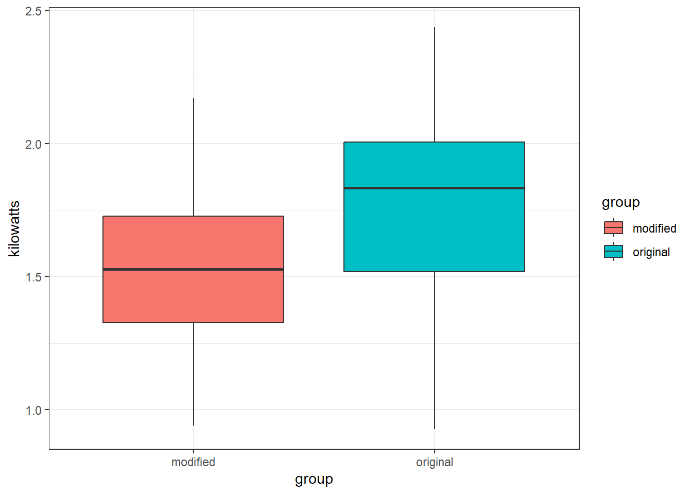
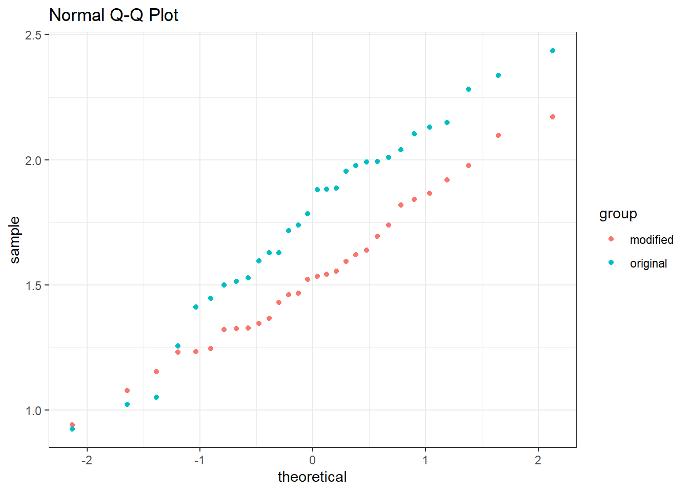

2 Example 1 - Refrigerator Hypothesis Test
The research and development department of an appliance company suspects the energy consumption required of their 18-cubic-foot refrigerator can be reduced by a slight modification to the current motor.
Sixty 18-cubic-foot refrigerators were randomly selected from the company’s warehouse. The first 30 had their motors modified while the last 30 were left intact. The energy consumption (kilowatts) for a 24-hour period for each refrigerator was recorded and stored in the data frame REFRIGERATOR from the PASWR2 package.
Question of interest: Is there evidence that the design modification reduces the refrigerators’ average energy consumption?
Install or load the package and then save the data to your environment. E.g:
2.1 Verifying normality
To solve this problem, start by verifying the reasonableness of the normality assumption. We can do this with ggplot().
ggplot(data = REFRIGERATOR, aes(x = group, y = kilowatts, fill = group)) +
geom_boxplot() +
theme_bw()
ggplot(data = REFRIGERATOR, aes(sample = kilowatts, color = group)) +
ggtitle("Normal Q-Q Plot") +
stat_qq() +
theme_bw()
The side-by-side boxplots and normal quantile-quantile plots suggest it is reasonable to assume the energy consumption for both models follows a normal distribution. Now, proceed with the five-step procedure.
2.2 Step 1 - Hypotheses
Hypotheses — Since the problem wants to test to see if the mean energy consumption for modified refrigerators is less than the mean energy consumption for original refrigerators, use a lower one-sided alternative hypothesis.
\[H_0 : \mu_{modified} - \mu_{original} = 0 \quad \text{versus} \quad H_1 : \mu_{modified} - \mu_{original} < 0\]
This is a one-tail test as as we want to know if the difference between the means is less than 0 rather looking to observe any difference which would give a two-tail hypotheses \(H_0 : \mu_{modified} - \mu_{original} = 0\) versus \(H_1 : \mu_{modified} - \mu_{original} \neq 0\).
2.3 Step 2 - Choosing a Test Statistic
The test statistic chosen is \(\bar{X}−\bar{Y}\) because \(E[\bar{X}−\bar{Y}] = \mu_X − \mu_Y\).
We have this as our test statistic because we want to evaluate the expected difference between the means.
We will determine the probability of obtaining that test statistic when the null hypothesis is true. We do this with standardisation and the probability is called the \(p\)-value which we will find soon.
## modified original
## 1.535800 1.760067The value of this test statistic is \(1.5358 − 1.7601 = −0.2243\).
From the boxplot, we notice that the two samples have unequal variances. Therefore, we are comparing two independent samples from normal distributions without assuming they have equal variances, i.e. performing a Welch test. The standardised test statistic under the assumption that \(H_0\) is true and its approximate distribution are:
\[ \frac{\left[ (\bar{X}-\bar{Y}) - \delta_0 \right]}{\sqrt{\left( \frac{S^2_X}{n_X}+\frac{S^2_Y}{n_Y} \right)} }\quad \dot{\sim} \quad t_\nu. \] This is what will be used to complete the test.
2.4 Step 3 - Hypothesis Test Calculations
2.4.1 Finding the Rejection Region
The degrees of freedom for this test are:
\[ \nu = \frac{\left( \frac{s^2_X}{n_X} + \frac{s^2_Y}{n_Y} \right)^2}{\frac{s^2_X/n_X}{n_X-1} + \frac{s^2_Y/n_Y}{n_Y-1}} = 54.7888 \]
Vars <- with(data = REFRIGERATOR, tapply(kilowatts, group, var))
nu <- (Vars[1] / 30 + Vars[2] / 30)^2 / ((Vars[1]/30)^2/29 + (Vars[2]/30)^2/29)
nu## modified
## 54.78877Because the standardised test statistic is distributed \(t_\nu\) and \(H_1\) is a lower one-sided hypothesis, the rejection region is the \(t_{obs} < t_{0.05; 54.7888}\).
From the statistical tables, the \(t\)-value that corresponds to our significance level (critical value) is \(t_{0.05; 54.7888} = -1.6731\). Remember this is negative because we are discussing the lower tail of the \(t\)-distribution.
Remember this same \(t\)-value can be found using the R function qt(0.05, 54.7888).
This gives us the critical value and the significance level which make up the rejection region (what we will compare our result to). Remember sketching or graphing this might help.
The rejection region is the area in which we would reject our null hypothesis. The critical value is the \(t\) value that corresponds to the significance level of 0.05, and hence is the top limit of our rejection region.
The probability of observing our test statistic (difference in sample means) or more extreme values under the null hypothesis is the \(p\)-value.
To reject a null hypothesis in this case we need our standardisd test statistic to be less than our critical value and hence our \(p\)-value < 0.05.
2.4.2 Finding the standardised test statistic and \(p\)-value
Our standardised test statistic \(=\frac{\bar{x}−\bar{y}-\delta_0}{\sqrt{\frac{s^2_X}{n_X}+\frac{s^2_Y}{n_Y} }} = -2.5128\).
## modified
## -2.512836To find the corresponding \(p\)-value, we could use:
## [1] 0.00737738In fact, in R the Welch test is automatically chosen within the t.test() function:
##
## Welch Two Sample t-test
##
## data: kilowatts by group
## t = -2.5128, df = 54.789, p-value = 0.007475
## alternative hypothesis: true difference in means between group modified and group original is less than 0
## 95 percent confidence interval:
## -Inf -0.07494116
## sample estimates:
## mean in group modified mean in group original
## 1.535800 1.760067We can check that the observed test statistic (t = -2.5128), the degrees of freedom in the \(t\)-distribution (df = 54.789) and the \(p\)-value (p-value = 0.007475) all match our previous calculations.
Last week we saw this graphically. You may want to revisit if you need help make a visual comparison between the value of test statistic and the rejection region we found above.
2.5 Step 4 - Statistical Conclusion
To draw our conclusions we need to consider our rejection region. Remember this is at the lower end of the t-distribtion for this one-sided test.
Is our standardised test statistic inside the rejection region? Is our \(p\)-value smaller than 0.05?
QUESTION: Do we reject our null hypothesis?
I. From the rejection region, we reject \(H_0\) because the standardised test statistic is less than the critical value and hence in the rejection region i.e. \(t_{obs} = -2.5128 < -1.6731\).
OR
- From the \(p\)-value, we reject \(H_0\) because the \(p\)-value \(0.0075 < 0.05\).
OR
- From the R output, 0 does not lie in the 95% confidence interval and thus we reject \(H_0\).
Whichever method we use, we reject \(H_0\).
2.6 Step 5 - English Conclusion
What does the previous statistical conclusion mean for the data and the purpose of the test?
Is there statistical evidence to suggest the mean for modified refrigerators is less than of original refrigerators?
QUESTION: Which of the following is the correct conclusion of our test?